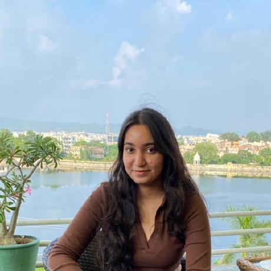

Tech Knows

Shreya Pandey
Designer & Team Leader
Presently enrolled in B.Tech, CSE at SRMIST, Chennai
Commanding a good share of knowledge over DSA and CS Fundamentals.
Always interested to work in teams to find and fix problems efficiently.
Love to dance, cook and eat scrumptious cuisines and to travel far and wide.
Commanding a good share of knowledge over DSA and CS Fundamentals.
Always interested to work in teams to find and fix problems efficiently.
Love to dance, cook and eat scrumptious cuisines and to travel far and wide.

Yatharth Sharma
Developer
I'm a pre-final year undergrad enrolled in B.Tech at SRMIST, Chennai.
Identify myself as a creative and convivial person which believes in team spirit.
Enthusiastic about coding,front-end development and networking.
Reading classic literary works fascinates me a lot.
Identify myself as a creative and convivial person which believes in team spirit.
Enthusiastic about coding,front-end development and networking.
Reading classic literary works fascinates me a lot.

Aakash Payala
Developer
I'm a pre-final year CS undergrad enrolled in B.Tech at SRMIST, Chennai.
Identify my self as team player, believes in collaborated efforts of all.
Interested in the domain of front-end development and solving problems
Photography exhilarates me a lot, thus has become my hobby.
Identify my self as team player, believes in collaborated efforts of all.
Interested in the domain of front-end development and solving problems
Photography exhilarates me a lot, thus has become my hobby.